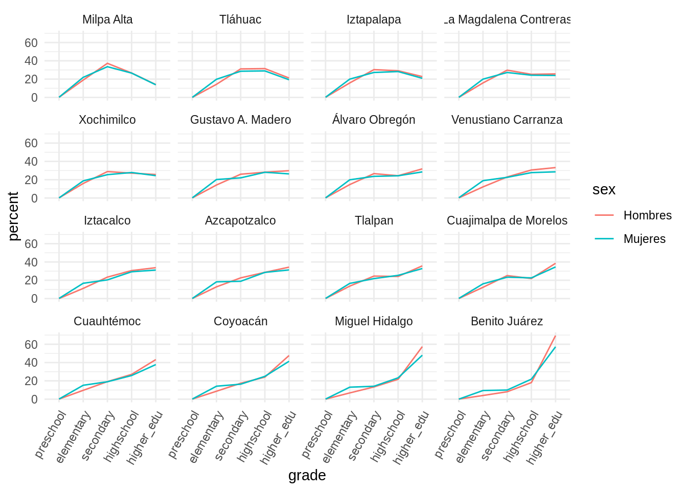

3.2 Datos limpios
Una vez que importamos datos a R es conveniente limpiarlos, esto implica almacenarlos de una manera consisistente que nos permita enfocarnos en responder preguntas de los datos en lugar de estar luchando con los datos. Entonces, datos limpios son datos que facilitan las tareas del análisis de datos:
Visualización: Resúmenes de datos usando gráficas, análisis exploratorio, o presentación de resultados.
Manipulación: Manipulación de variables como agregar, filtrar, reordenar, transformar.
Modelación: Ajustar modelos es sencillo si los datos están en la forma correcta.
Los principios de datos limpios (Wickham 2014) proveen una manera estándar de organizar la información:
- Cada variable forma una columna.
- Cada observación forma un renglón.
- Cada tipo de unidad observacional forma una tabla.
Vale la pena notar que los principios de los datos limpios se pueden ver como teoría de algebra relacional para estadísticos, estós principios equivalen a la tercera forma normal de Codd con enfoque en una sola tabla de datos en lugar de muchas conectadas en bases de datos relacionales.
Veamos un ejemplo:
La mayor parte de las bases de datos en estadística tienen forma rectangular, ¿cuántas variables tiene la siguiente tabla?
| tratamientoA | tratamientoB | |
|---|---|---|
| Juan Aguirre | - | 2 |
| Ana Bernal | 16 | 11 |
| José López | 3 | 1 |
La tabla anterior también se puede estructurar de la siguiente manera:
| Juan Aguirre | Ana Bernal | José López | |
|---|---|---|---|
| tratamientoA | - | 16 | 3 |
| tratamientoB | 2 | 11 | 1 |
Si vemos los principios (cada variable forma una columna, cada observación forma un renglón, cada tipo de unidad observacional forma una tabla), ¿las tablas anteriores cumplen los principios?
Para responder la pregunta identifiquemos primero cuáles son las variables y cuáles las observaciones de esta pequeña base. Las variables son: persona/nombre, tratamiento y resultado. Entonces, siguiendo los principios de datos limpios obtenemos la siguiente estructura:
| nombre | tratamiento | resultado |
|---|---|---|
| Juan Aguirre | a | - |
| Ana Bernal | a | 16 |
| José López | a | 3 |
| Juan Aguirre | b | 2 |
| Ana Bernal | b | 11 |
| José López | b | 1 |
Limpieza bases de datos
Los principios de los datos limpios parecen obvios pero la mayor parte de los datos no los cumplen debido a:
- La mayor parte de la gente no está familiarizada con los principios y es
difícil derivarlos por uno mismo.
- Los datos suelen estar organizados para facilitar otros aspectos que no son análisis, por ejemplo, la captura.
Algunos de los problemas más comunes en las bases de datos que no están limpias son:
- Los encabezados de las columnas son valores y no nombres de variables.
- Más de una variable por columna.
- Las variables están organizadas tanto en filas como en columnas.
- Más de un tipo de observación en una tabla.
- Una misma unidad observacional está almacenada en múltiples tablas.
La mayor parte de estos problemas se pueden arreglar con pocas herramientas,
a continuación veremos como limpiar datos usando 2 funciones del paquete
tidyr:
- gather: recibe múltiples columnas y las junta en pares de valores y
nombres, convierte los datos anchos en largos.
- spread: recibe 2 columnas y las separa, haciendo los datos más anchos.
Repasaremos los problemas más comunes que se encuentran en conjuntos de datos sucios y mostraremos como se puede manipular la tabla de datos (usando las funciones gather y spread) con el fin de estructurarla para que cumpla los principios de datos limpios.
Los encabezados de las columanas son valores
Usaremos ejemplos para entender los conceptos más facilmente. Comenzaremos con una tabla de datos que contiene las mediciones de partículas suspendidas PM2.5 de la red automática de monitoreo atmosférico (RAMA) para los primeros meses del 2019.
¿Cuáles son las variables en estos datos?
Esta base de datos tiene 4 variables: fecha, hora, estación y medición (en \(\mu g/m^3\), microgramos por metro cúbico).
Notemos que al alargar los datos desapareceran las columnas que se agrupan y dan
lugar a dos nuevas columnas: la correspondiente a estación y la
correspondiente a medición. Entonces, para alargar una base de datos usamos la
función gather que recibe los argumentos:
- data: base de datos que vamos a reestructurar.
- key: nombre de la nueva variable que contiene lo que fueron los nombres
de columnas que apilamos.
- value: nombre de la variable que almacenará los valores que corresponden a
cada key.
- …: lo último que especificamos son las columnas que vamos a apilar, la
notación para seleccionarlas es la misma que usamos con
select().
pm25_2019_tidy <- gather(pm25_2019, key = ESTACION, value = MEDICION, -FECHA, -HORA)
head(pm25_2019_tidy)
#> # A tibble: 6 x 4
#> FECHA HORA ESTACION MEDICION
#> <dttm> <dbl> <chr> <dbl>
#> 1 2019-01-01 00:00:00 1 AJM 19
#> 2 2019-01-01 00:00:00 2 AJM 17
#> 3 2019-01-01 00:00:00 3 AJM 14
#> 4 2019-01-01 00:00:00 4 AJM 6
#> 5 2019-01-01 00:00:00 5 AJM 4
#> 6 2019-01-01 00:00:00 6 AJM 7
tail(pm25_2019_tidy)
#> # A tibble: 6 x 4
#> FECHA HORA ESTACION MEDICION
#> <dttm> <dbl> <chr> <dbl>
#> 1 2019-07-31 00:00:00 19 XAL 12
#> 2 2019-07-31 00:00:00 20 XAL 11
#> 3 2019-07-31 00:00:00 21 XAL 7
#> 4 2019-07-31 00:00:00 22 XAL NA
#> 5 2019-07-31 00:00:00 23 XAL 7
#> 6 2019-07-31 00:00:00 24 XAL 7Observemos que en la tabla ancha teníamos bajo la columna <$10k, en el renglón correspondiente a Agnostic un valor de 27, y podemos ver que este valor en la tabla larga se almacena bajo la columna frecuencia y corresponde a religión Agnostic, income <$10k. También es importante ver que en este ejemplo especificamos las columnas a apilar identificando la que no vamos a alargar con un signo negativo: es decir apila todas las columnas menos religión.
La nueva estructura de la base de datos nos permite, por ejemplo, hacer fácilmente una gráfica donde podemos comparar las diferencias en las frecuencias.
Nota: En esta sección no explicaremos las funciones de graficación pues estas se cubren en las notas introductorias a R. En esta parte nos queremos concentrar en como limpiar datos y ejemplificar lo sencillo que es trabajar con datos limpios, esto es, una vez que los datos fueron reestructurados es fácil construir gráficas y resúmenes.
pm25_2019_tidy %>%
mutate(
FALTANTE = is.na(MEDICION),
ESTACION = reorder(ESTACION, FALTANTE, sum)
) %>%
ggplot(aes(x = FECHA, y = HORA, fill = is.na(MEDICION))) +
geom_raster(alpha = 0.8) +
facet_wrap(~ ESTACION) +
scale_fill_manual("faltante",
values = c("TRUE" = "salmon", "FALSE" = "gray"))
Otro ejemplo, veamos los datos df_edu, ¿cuántas variables tenemos?
df_edu
#> # A tibble: 7,371 x 16
#> state_code municipio_code region state_name state_abbr municipio_name
#> <chr> <chr> <chr> <chr> <chr> <chr>
#> 1 01 001 01001 Aguascali… AGS Aguascalientes
#> 2 01 001 01001 Aguascali… AGS Aguascalientes
#> 3 01 001 01001 Aguascali… AGS Aguascalientes
#> 4 01 002 01002 Aguascali… AGS Asientos
#> 5 01 002 01002 Aguascali… AGS Asientos
#> 6 01 002 01002 Aguascali… AGS Asientos
#> 7 01 003 01003 Aguascali… AGS Calvillo
#> 8 01 003 01003 Aguascali… AGS Calvillo
#> 9 01 003 01003 Aguascali… AGS Calvillo
#> 10 01 004 01004 Aguascali… AGS Cosío
#> # … with 7,361 more rows, and 10 more variables: sex <chr>, pop_15 <dbl>,
#> # no_school <dbl>, preschool <dbl>, elementary <dbl>, secondary <dbl>,
#> # highschool <dbl>, higher_edu <dbl>, other <dbl>, schoolyrs <dbl>Notemos que el nivel de escolaridad esta guardado en 6 columnas (preschool, elementary, …, other), este tipo de almacenamiento no es limpio pero puede ser útil al momento de ingresar la información.
Para tener datos limpios apilamos los niveles de escolaridad de manera que sea una sola columna (nuevamente alargamos los datos):
df_edu_tidy <- gather(data = df_edu, grade, percent, preschool:other,
na.rm = TRUE)
glimpse(df_edu_tidy)
#> Observations: 44,226
#> Variables: 12
#> $ state_code <chr> "01", "01", "01", "01", "01", "01", "01", "01", "…
#> $ municipio_code <chr> "001", "001", "001", "002", "002", "002", "003", …
#> $ region <chr> "01001", "01001", "01001", "01002", "01002", "010…
#> $ state_name <chr> "Aguascalientes", "Aguascalientes", "Aguascalient…
#> $ state_abbr <chr> "AGS", "AGS", "AGS", "AGS", "AGS", "AGS", "AGS", …
#> $ municipio_name <chr> "Aguascalientes", "Aguascalientes", "Aguascalient…
#> $ sex <chr> "Total", "Hombres", "Mujeres", "Total", "Hombres"…
#> $ pop_15 <dbl> 631064, 301714, 329350, 31013, 14991, 16022, 3867…
#> $ no_school <dbl> 2.662329, 2.355211, 2.943677, 4.011221, 4.389300,…
#> $ schoolyrs <dbl> 10.211152, 10.380144, 10.056383, 7.854005, 7.6920…
#> $ grade <chr> "preschool", "preschool", "preschool", "preschool…
#> $ percent <dbl> 0.17335801, 0.17466873, 0.17215728, 0.25795634, 0…Notemos que en esta ocasión especificamos las columnas que vamos a apilar
indicando el nombre de la primera de ellas seguido de : y por último el
nombre de la última variable a apilar.
Por otra parte, el parámetro na.rm = TRUE se utiliza para eliminar los
renglones con valores faltantes en la columna de porcentaje, esto es, eliminamos
aquellas observaciones que tenían NA en la columnas de nivel de escolaridad de
la tabla ancha. En este caso optamos por que los faltantes sean implícitos, la
conveniencia de tenerlos implícitos/explícitos dependerá de la aplicación.
Con los datos limpios es facil hacer manipulaciones y graficar.
df_edu_cdmx <- df_edu_tidy %>%
filter(state_abbr == "CDMX", sex != "Total", grade != "other") %>%
mutate(municipio_name = reorder(municipio_name, percent, last))
ggplot(df_edu_cdmx, aes(x = grade,
y = percent, group = sex, color = sex)) +
geom_path() +
facet_wrap(~municipio_name) +
theme(axis.text.x = element_text(angle = 60, hjust = 1)) +
scale_x_discrete(limits = c("preschool", "elementary",
"secondary", "highschool", "higher_edu"))
Una columna asociada a más de una variable
La siguiente base de datos proviene de la Organización Mundial de la Salud y contiene el número de casos confirmados de tuberculosis por país y año, la información esta por grupo demográfico de acuerdo a sexo (m, f), y edad (0-4, 5-14, etc). Los datos están disponibles en http://www.who.int/tb/country/data/download/en/.
Utilizaremos un subconjunto de los datos de la prueba ENLACE a nivel primaria, la prueba ENLACE evaluaba a todos los alumnos de tercero a sexto de primaria y a los alumnos de secundaria del país en 3 áreas: español, matemáticas y formación cívica y ética.
data("enlacep_2013")
enlacep_sub_2013 <- enlacep_2013 %>%
select(CVE_ENT:PUNT_FCE_6) %>%
sample_n(1000)
glimpse(enlacep_sub_2013)
#> Observations: 1,000
#> Variables: 22
#> $ CVE_ENT <chr> "15", "06", "31", "30", "07", "07", "22", "11", "22",…
#> $ NOM_ENT <chr> "MEXICO", "COLIMA", "YUCATAN", "VERACRUZ", "CHIAPAS",…
#> $ CCT <chr> "15PPR3487P", "06DPR0127X", "31DPR1719O", "30KPR2776X…
#> $ TURNO <chr> "MATUTINO", "MATUTINO", "MATUTINO", "MATUTINO", "MATU…
#> $ ESCUELA <chr> "COLEGIO FELIPE ANGELES", "FEDERICO RANGEL FUENTES", …
#> $ TIPO <chr> "PARTICULAR", "GENERAL", "GENERAL", "CONAFE", "CONAFE…
#> $ CVE_MUN <chr> "099", "002", "050", "178", "078", "031", "018", "014…
#> $ NOM_MUN <chr> "TEXCOCO", "COLIMA", "MERIDA", "TLACOTALPAN", "SAN CR…
#> $ CVE_LOC <chr> "0001", "0001", "0001", "0137", "0176", "0558", "0043…
#> $ NOM_LOC <chr> "TEXCOCO DE MORA", "COLIMA", "MERIDA", "PLAYA MARTINE…
#> $ PUNT_ESP_3 <dbl> 531, 481, 481, 573, 387, 353, 490, 522, 552, 479, 630…
#> $ PUNT_MAT_3 <dbl> 549, 496, 492, 469, 416, 413, 529, 558, 596, 505, 671…
#> $ PUNT_FCE_3 <dbl> 477, 404, 439, 473, 341, 390, 437, 467, 505, 437, 575…
#> $ PUNT_ESP_4 <dbl> 481, 469, 522, NA, 337, 391, 539, 551, 590, 506, 744,…
#> $ PUNT_MAT_4 <dbl> 489, 508, 541, NA, 391, 400, 594, 579, 717, 569, 778,…
#> $ PUNT_FCE_4 <dbl> 441, 419, 492, NA, 397, 386, 509, 525, 567, 462, 664,…
#> $ PUNT_ESP_5 <dbl> 523, 536, 567, 561, 358, 372, 537, 507, 504, 512, 738…
#> $ PUNT_MAT_5 <dbl> 390, 545, 581, 628, 400, 341, 640, 546, 541, 620, 756…
#> $ PUNT_FCE_5 <dbl> 402, 502, 522, 527, 368, 356, 498, 462, 434, 486, 642…
#> $ PUNT_ESP_6 <dbl> 575, 503, 543, 491, 388, 384, 552, 548, 538, 513, 698…
#> $ PUNT_MAT_6 <dbl> 506, 539, 579, 555, 320, 376, 646, 625, 593, 587, 706…
#> $ PUNT_FCE_6 <dbl> 517, 469, 518, 378, 353, 338, 423, 488, 461, 446, 564… De manera similar a los ejemplos anteriores,
utiliza la función
De manera similar a los ejemplos anteriores,
utiliza la función gather para apilar las columnas correspondientes a
área-grado.
Piensa en como podemos separar la “variable” área-grado en dos columnas.
Ahora separaremos las variables materia y grado de la columna materia_grado,
para ello debemos pasar a la función separate(), esta recibe como parámetros:
el nombre de la base de datos,
el nombre de la variable que deseamos separar en más de una,
la posición de donde deseamos “cortar” (hay más opciones para especificar como separar, ver
?separate). El default es separar valores en todos los lugares que encuentre un caracter que no es alfanumérico (espacio, guión,…).
enlacep_tidy <- separate(data = enlacep_long, col = AREA_GRADO,
into = c("AREA", "GRADO"), sep = 9)
enlacep_tidy
#> # A tibble: 11,298 x 13
#> CVE_ENT NOM_ENT CCT TURNO ESCUELA TIPO CVE_MUN NOM_MUN CVE_LOC
#> <chr> <chr> <chr> <chr> <chr> <chr> <chr> <chr> <chr>
#> 1 15 MEXICO 15PP… MATU… COLEGI… PART… 099 TEXCOCO 0001
#> 2 06 COLIMA 06DP… MATU… FEDERI… GENE… 002 COLIMA 0001
#> 3 31 YUCATAN 31DP… MATU… GUADAL… GENE… 050 MERIDA 0001
#> 4 30 VERACR… 30KP… MATU… PLAYA … CONA… 178 TLACOT… 0137
#> 5 07 CHIAPAS 07KP… MATU… JABALT… CONA… 078 SAN CR… 0176
#> 6 07 CHIAPAS 07DP… MATU… "NI\u0… INDê… 031 CHILON 0558
#> 7 22 QUERET… 22DP… MATU… MARGAR… GENE… 018 TOLIMAN 0043
#> 8 11 GUANAJ… 11EP… MATU… JUAN D… GENE… 014 DOLORE… 0124
#> 9 22 QUERET… 22DP… MATU… CUAUHT… GENE… 012 PEDRO … 0028
#> 10 14 JALISCO 14DP… MATU… ESCUEL… GENE… 055 MAGDAL… 0001
#> # … with 11,288 more rows, and 4 more variables: NOM_LOC <chr>,
#> # AREA <chr>, GRADO <chr>, PUNTAJE <dbl>
# creamos un mejor código de área
enlacep_tidy <- enlacep_tidy %>%
mutate(
AREA = substr(AREA, 6, 8),
GRADO = as.numeric(GRADO)
) %>%
janitor::clean_names()
glimpse(enlacep_tidy)
#> Observations: 11,298
#> Variables: 13
#> $ cve_ent <chr> "15", "06", "31", "30", "07", "07", "22", "11", "22", "1…
#> $ nom_ent <chr> "MEXICO", "COLIMA", "YUCATAN", "VERACRUZ", "CHIAPAS", "C…
#> $ cct <chr> "15PPR3487P", "06DPR0127X", "31DPR1719O", "30KPR2776X", …
#> $ turno <chr> "MATUTINO", "MATUTINO", "MATUTINO", "MATUTINO", "MATUTIN…
#> $ escuela <chr> "COLEGIO FELIPE ANGELES", "FEDERICO RANGEL FUENTES", "GU…
#> $ tipo <chr> "PARTICULAR", "GENERAL", "GENERAL", "CONAFE", "CONAFE", …
#> $ cve_mun <chr> "099", "002", "050", "178", "078", "031", "018", "014", …
#> $ nom_mun <chr> "TEXCOCO", "COLIMA", "MERIDA", "TLACOTALPAN", "SAN CRIST…
#> $ cve_loc <chr> "0001", "0001", "0001", "0137", "0176", "0558", "0043", …
#> $ nom_loc <chr> "TEXCOCO DE MORA", "COLIMA", "MERIDA", "PLAYA MARTINEZ",…
#> $ area <chr> "ESP", "ESP", "ESP", "ESP", "ESP", "ESP", "ESP", "ESP", …
#> $ grado <dbl> 3, 3, 3, 3, 3, 3, 3, 3, 3, 3, 3, 3, 3, 3, 3, 3, 3, 3, 3,…
#> $ puntaje <dbl> 531, 481, 481, 573, 387, 353, 490, 522, 552, 479, 630, 5…Variables almacenadas en filas y columnas
El problema más difícil es cuando las variables están tanto en filas como en columnas, veamos una base de datos de fertilidad. ¿Cuáles son las variables en estos datos?
data("df_fertility")
df_fertility
#> # A tibble: 306 x 11
#> state size_localidad est age_15_19 age_20_24 age_25_29 age_30_34
#> <chr> <chr> <chr> <dbl> <dbl> <dbl> <dbl>
#> 1 01 A… Menos de 2 50… Valor 74.2 175. 175. 102.
#> 2 01 A… Menos de 2 50… Erro… 6.71 11.0 9.35 8.05
#> 3 01 A… 2 500-14 999 … Valor 82.5 171. 140. 103.
#> 4 01 A… 2 500-14 999 … Erro… 9.79 12.5 10.4 8.76
#> 5 01 A… 15 000-49 999… Valor 72.6 146. 147. 99.0
#> 6 01 A… 15 000-49 999… Erro… 7.07 10.8 10.5 8.11
#> 7 01 A… 100 000 y más… Valor 66.3 120. 102. 84.2
#> 8 01 A… 100 000 y más… Erro… 7.57 8.66 8.98 8.59
#> 9 02 B… Menos de 2 50… Valor 89.6 158. 117. 86.0
#> 10 02 B… Menos de 2 50… Erro… 15.8 17.2 13.2 12.3
#> # … with 296 more rows, and 4 more variables: age_35_39 <dbl>,
#> # age_40_44 <dbl>, age_45_49 <dbl>, global <dbl>Estos datos tienen variables en columnas individuales (state, size_localidad), en múltiples columnas (grupo de edad, age_15_19,..) y en filas (Valor y Error estándar).
Comencemos por apilar las columnas.
fertility_long <- gather(df_fertility, age_bracket, value, age_15_19:global,
na.rm = TRUE)
fertility_long
#> # A tibble: 2,448 x 5
#> state size_localidad est age_bracket value
#> <chr> <chr> <chr> <chr> <dbl>
#> 1 01 Aguascalientes Menos de 2 500 habitan… Valor age_15_19 74.2
#> 2 01 Aguascalientes Menos de 2 500 habitan… Error están… age_15_19 6.71
#> 3 01 Aguascalientes 2 500-14 999 habitantes Valor age_15_19 82.5
#> 4 01 Aguascalientes 2 500-14 999 habitantes Error están… age_15_19 9.79
#> 5 01 Aguascalientes 15 000-49 999 habitant… Valor age_15_19 72.6
#> 6 01 Aguascalientes 15 000-49 999 habitant… Error están… age_15_19 7.07
#> 7 01 Aguascalientes 100 000 y más habitant… Valor age_15_19 66.3
#> 8 01 Aguascalientes 100 000 y más habitant… Error están… age_15_19 7.57
#> 9 02 Baja Californ… Menos de 2 500 habitan… Valor age_15_19 89.6
#> 10 02 Baja Californ… Menos de 2 500 habitan… Error están… age_15_19 15.8
#> # … with 2,438 more rowsPodemos crear algunas variables adicionales.
fertility_vars <- fertility_long %>%
mutate(
state_code = str_sub(state, 1, 2),
state_name = str_sub(state, 4)
) %>%
select(-state)
fertility_vars
#> # A tibble: 2,448 x 6
#> size_localidad est age_bracket value state_code state_name
#> <chr> <chr> <chr> <dbl> <chr> <chr>
#> 1 Menos de 2 500 habi… Valor age_15_19 74.2 01 Aguascalien…
#> 2 Menos de 2 500 habi… Error es… age_15_19 6.71 01 Aguascalien…
#> 3 2 500-14 999 habita… Valor age_15_19 82.5 01 Aguascalien…
#> 4 2 500-14 999 habita… Error es… age_15_19 9.79 01 Aguascalien…
#> 5 15 000-49 999 habit… Valor age_15_19 72.6 01 Aguascalien…
#> 6 15 000-49 999 habit… Error es… age_15_19 7.07 01 Aguascalien…
#> 7 100 000 y más habit… Valor age_15_19 66.3 01 Aguascalien…
#> 8 100 000 y más habit… Error es… age_15_19 7.57 01 Aguascalien…
#> 9 Menos de 2 500 habi… Valor age_15_19 89.6 02 Baja Califo…
#> 10 Menos de 2 500 habi… Error es… age_15_19 15.8 02 Baja Califo…
#> # … with 2,438 more rowsFinalmente, la columna est no es una variable, sino que almacena el nombre
de 5 variables, la operación que debemos aplicar (spread) es el inverso de
apilar (gather):
Y podemos mejorar los nombres de las columnas, una opción rápida es usar el
paquete janitor.
fertility_tidy %>%
janitor::clean_names() %>%
glimpse()
#> Observations: 1,224
#> Variables: 6
#> $ size_localidad <chr> "100 000 y más habitantes", "100 000 y más habita…
#> $ age_bracket <chr> "age_15_19", "age_15_19", "age_15_19", "age_15_19…
#> $ state_code <chr> "01", "02", "03", "04", "05", "06", "07", "08", "…
#> $ state_name <chr> "Aguascalientes", "Baja California", "Baja Califo…
#> $ error_estandar <dbl> 7.572352, 3.204220, 13.055474, 9.145983, 4.819321…
#> $ valor <dbl> 66.33564, 43.03023, 58.97916, 61.79522, 80.08338,…o podemos hacerlo manualmente
Ahora es inmediato no solo hacer gráficas sino también ajustar un modelo.
# ajustamos un modelo lineal donde la variable respuesta es temperatura
# máxima, y la variable explicativa es el mes
fertility_sub <- filter(fertility_tidy, age_bracket != "global")
fertility_lm <- lm(est ~ age_bracket, data = fertility_sub)
summary(fertility_lm)
#>
#> Call:
#> lm(formula = est ~ age_bracket, data = fertility_sub)
#>
#> Residuals:
#> Min 1Q Median 3Q Max
#> -7.3784 -2.3282 -0.5896 1.1359 31.5091
#>
#> Coefficients:
#> Estimate Std. Error t value Pr(>|t|)
#> (Intercept) 6.8723 0.3277 20.973 < 2e-16 ***
#> age_bracketage_20_24 2.3948 0.4634 5.168 2.83e-07 ***
#> age_bracketage_25_29 2.3272 0.4634 5.022 5.99e-07 ***
#> age_bracketage_30_34 1.2363 0.4634 2.668 0.00775 **
#> age_bracketage_35_39 -0.9413 0.4634 -2.031 0.04246 *
#> age_bracketage_40_44 -3.7525 0.4634 -8.098 1.52e-15 ***
#> age_bracketage_45_49 -6.0480 0.4634 -13.051 < 2e-16 ***
#> ---
#> Signif. codes: 0 '***' 0.001 '**' 0.01 '*' 0.05 '.' 0.1 ' ' 1
#>
#> Residual standard error: 4.053 on 1064 degrees of freedom
#> Multiple R-squared: 0.3479, Adjusted R-squared: 0.3443
#> F-statistic: 94.62 on 6 and 1064 DF, p-value: < 2.2e-16Mas de un tipo de observación en una misma tabla
Esta es quizá el principio menos importante de datos limpios y su conveniencia dependerá de la situación, pero vale la pena conocerlo.
En ocasiones las bases de datos involucran valores en diferentes niveles, en diferentes tipos de unidad observacional. En la limpieza de datos, cada unidad observacional debe estar almacenada en su propia tabla (esto esta ligado a normalización de una base de datos), es importante para evitar inconsistencias en los datos.
¿Cuáles son las unidades observacionales de los datos df_mxmunicipio?
df_mxmunicipio
#> # A tibble: 2,457 x 18
#> state_code municipio_code region state_name state_name_offi… state_abbr
#> <chr> <chr> <chr> <chr> <chr> <chr>
#> 1 01 001 01001 Aguascali… Aguascalientes AGS
#> 2 01 002 01002 Aguascali… Aguascalientes AGS
#> 3 01 003 01003 Aguascali… Aguascalientes AGS
#> 4 01 004 01004 Aguascali… Aguascalientes AGS
#> 5 01 005 01005 Aguascali… Aguascalientes AGS
#> 6 01 006 01006 Aguascali… Aguascalientes AGS
#> 7 01 007 01007 Aguascali… Aguascalientes AGS
#> 8 01 008 01008 Aguascali… Aguascalientes AGS
#> 9 01 009 01009 Aguascali… Aguascalientes AGS
#> 10 01 010 01010 Aguascali… Aguascalientes AGS
#> # … with 2,447 more rows, and 12 more variables:
#> # state_abbr_official <chr>, municipio_name <chr>, pop <int>,
#> # pop_male <int>, pop_female <int>, afromexican <dbl>,
#> # part_afromexican <dbl>, indigenous <dbl>, part_indigenous <dbl>,
#> # metro_area <chr>, long <dbl>, lat <dbl>Separemos esta base de datos en dos: la tabla a nivel municipio que almacena las variables de sexo (sex) a escolaridad media (schoolyrs).
df_mxmunicipio_normal <- df_mxmunicipio %>%
select(state_code, municipio_code, region, municipio_name:lat)
glimpse(df_mxmunicipio_normal)
#> Observations: 2,457
#> Variables: 14
#> $ state_code <chr> "01", "01", "01", "01", "01", "01", "01", "01",…
#> $ municipio_code <chr> "001", "002", "003", "004", "005", "006", "007"…
#> $ region <chr> "01001", "01002", "01003", "01004", "01005", "0…
#> $ municipio_name <chr> "Aguascalientes", "Asientos", "Calvillo", "Cosí…
#> $ pop <int> 877190, 46464, 56048, 15577, 120405, 46473, 538…
#> $ pop_male <int> 425731, 22745, 27298, 7552, 60135, 22490, 26693…
#> $ pop_female <int> 451459, 23719, 28750, 8025, 60270, 23983, 27173…
#> $ afromexican <dbl> 532, 3, 10, 0, 32, 3, 13, 13, 4, 0, 43, 1139, 3…
#> $ part_afromexican <dbl> 2791, 130, 167, 67, 219, 74, 578, 37, 59, 60, 3…
#> $ indigenous <dbl> 104125, 1691, 7358, 2213, 8679, 6232, 6714, 173…
#> $ part_indigenous <dbl> 14209, 92, 2223, 191, 649, 251, 247, 84, 76, 24…
#> $ metro_area <chr> "Aguascalientes", NA, NA, NA, "Aguascalientes",…
#> $ long <dbl> -102.29605, -102.08928, -102.71875, -102.30004,…
#> $ lat <dbl> 21.87982, 22.23832, 21.84691, 22.36641, 21.9612…Y la tabla a nivel estado, que almacena las claves y variables a nivel estado.
df_statecodes <- df_mxmunicipio %>%
select(contains("state")) %>%
distinct()
glimpse(df_statecodes)
#> Observations: 32
#> Variables: 5
#> $ state_code <chr> "01", "02", "03", "04", "05", "06", "07", "0…
#> $ state_name <chr> "Aguascalientes", "Baja California", "Baja C…
#> $ state_name_official <chr> "Aguascalientes", "Baja California", "Baja C…
#> $ state_abbr <chr> "AGS", "BC", "BCS", "CAMP", "COAH", "COL", "…
#> $ state_abbr_official <chr> "Ags.", "BC", "BCS", "Camp.", "Coah.", "Col.…Una misma unidad observacional está almacenada en múltiples tablas
También es común que los valores sobre una misma unidad observacional estén separados en muchas tablas o archivos, es común que estas tablas esten divididas de acuerdo a una variable, de tal manera que cada archivo representa a una persona, año o ubicación. Para juntar los archivos hacemos lo siguiente:
- Leemos los archivos en una lista de tablas.
- Para cada tabla agregamos una columna que registra el nombre del archivo original.
- Combinamos las tablas en un solo data frame.
Veamos un ejemplo, descarga la carpeta con los datos de varios contaminantes de RAMA,
ésta contiene 9 archivos de excel que almacenan información de monitoreo de contaminantes. Cada archivo contiene información de un contaminante y el nombre del archivo indica el contaminante.
Los pasos en R (usando el paquete purrr), primero creamos un vector con los
nombres de los archivos en un directorio, eligiendo aquellos que contengan las
letras “.csv”.
Después le asignamos el nombre del archivo al nombre de cada elemento del vector. Este paso se realiza para preservar los nombres de los archivos ya que estos los asignaremos a una variable mas adelante.
La función map_df itera sobre cada dirección, lee el archivo excel de dicha
dirección y los combina en un data frame.
library(readxl)
rama <- map_df(paths, read_excel, .id = "FILENAME")
# eliminamos la basura del id
rama <- rama %>%
mutate(PARAMETRO = str_remove(FILENAME, "2019") %>% str_remove(".xls")) %>%
select(PARAMETRO, FECHA:AJU)
#> Error in stri_replace_first_regex(string, pattern, fix_replacement(replacement), : object 'FILENAME' not found
# y apilamos para tener una columna por estación
rama_tidy <- rama %>%
gather(estacion, valor, ACO:AJU) %>%
mutate(valor = ifelse(-99, NA, valor))
#> Error in is_string(x): object 'ACO' not found
rama_tidy
#> Error in eval(expr, envir, enclos): object 'rama_tidy' not foundOtras consideraciones
En las buenas prácticas es importante tomar en cuenta los siguientes puntos:
Incluir un encabezado con el nombre de las variables.
Los nombres de las variables deben ser entendibles (e.g. AgeAtDiagnosis es mejor que AgeDx).
En general los datos se deben guardar en un archivo por tabla.
Escribir un script con las modificaciones que se hicieron a los datos crudos (reproducibilidad).
Otros aspectos importantes en la limpieza de datos son: selección del tipo de variables (por ejemplo fechas), datos faltantes, typos y detección de valores atípicos.
Recursos adicionales
- Data Transformation Cheat Sheet, RStudio.
Referencias
Wickham, Hadley. 2014. “Tidy Data.” Journal of Statistical Software, Articles 59 (10):1–23. https://doi.org/10.18637/jss.v059.i10.